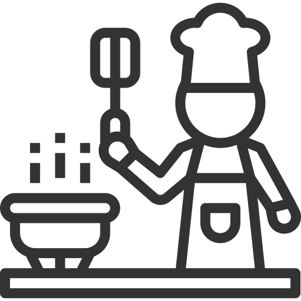
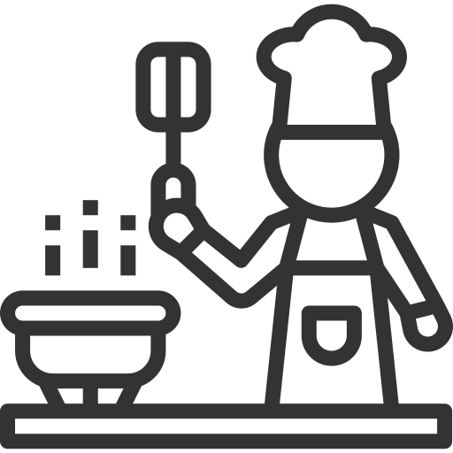

Lanterna
Como iniciação do trabalho realizei um estudo dos vários tipos de lanternas. Desde as mais simples às mais complexas. Após um estudo exaustivo, optei pelo tema do ar livre. Ou seja as lanternas que servem para auxiliar em atividades do exterior. Selecionei como genótipos: as lanternas para bicicletas, que se encaixam na própria bicicleta, as lanternas de campismo, as quais podemos pegar com a mão ou colocar penduradas num local específico e por fim as de caminhadas com aplicação na cabeça. Para cada genótipo escolhi cinco fenótipos. Isto é, vários tamanhos, diferentes materiais, cores, formas de encaixe, formas de segurar e muitas outras características destes objetos. Posto isto, escolhi um dos quinze fenótipos para estudar mais permonorizadamente, sendo que o escolhido foi uma lanterna de campismo. De forma a perceber melhor este objeto, realizei duas perspetivas, das quais uma explodida. Desenhei e cotei as várias peças que compõem a minha lanterna. Só após este estudo complexo é que realizei uma proposta de uma nova lanterna de campismo com mais funcionalidades. A minha proposta foi uma lanterna de campismo para crianças que propunha uma pega mais macia e conforável, um tamanho mais pequeno e uma componente adicional que permitisse transformar a lanterna numa luz de presença noturna. A componente que utilizei foram pétalas de um girassol. Quando estavam levantadas é porque o objeto estava a ser utilizado como lanterna. Quando estavam para baixo é porque estava a servir de luz de presença. Para finalizar este trabalho realizei uma maquete com a minha proposta.
Natália
A voz de Natalia reflete o mundo contemporâneo. Com o seu estilo irreverente, expõe os conteúdos mais atuais que refletem como nós, os milênios. Graficamente, tem um sentimento misto com uma abordagem de divergência que resulta como uma única. Com grande coerência, Natalia reflete o vermelhão de informações que cada um de nós enfrenta diariamente. Esta fonte tipográfica foi criada pelo designer gráfico João Miranda. É uma fonte que pretende romper com os tradicionalismos, pelo que se insere no contexto do design pós-modernista. Apesar de contemporânea, foi moldada por várias influências como por exemplo o estilo americano Styling e Streamline. Desta forma, no que diz respeito à sua anatomia ousada, Natália tem como inspiração 3 formas geométricas: o círculo, o losango e o quadrado. É a combinação destas que dá origem a todo o espectro de caracteres. Esta tipografia é ideal para desempenhar funções a nível do design de cartaz e design digital, funcionando respetivamente como título e texto, já que as suas formas singulares revelam um pensamento inovador e futurista, não comprometendo, porém, a legibilidade. A sua essência divertida e extravagante torna-a apelativa a uma nova geração motivada por estímulos visuais, refletindo a imensidão de informação à qual somos expostos diariamente. Em adição, reflete também a necessidade jovem de mudar e de reinventar uma linguagem visual, que agora pode ser conseguido com a simples utilização de uma fonte, sem necessitar do uso de imagens. É sobretudo uma forma de afirmação e expressão.
InVerso
O saco InVerso é desdobrável com o objetivo de evitar o desperdício de plástico nas idas ao supermercado, por exemplo, ou seja, um saco sustentável. O padrão do saco faz referência a um dos pontos turísticos do distrito de Aveiro, a praia da Costa Nova, o tecido escolhido para o nosso saco remete para as riscas características das casas e barracas desse local. Assim, pretendemos estabelecer uma ligação com a cidade na qual a universidade se insere. A sustentabilidade é um tema importante associado ao nosso projeto, tendo em conta as nossas intenções de evitar o desperdício no uso de vários sacos. Ao comprarem o saco da InVerso, as pessoas estarão a contribuir para um planeta mais sustentável, pois terão um menor impacto no mundo. Com esta marca pretendemos alertar e consciencializar as pessoas para a importância da preocupação com o ambiente e da preservação do mesmo. Deste modo, esperamos conseguir chegar a um público vasto, pois com pequenos gestos podemos fazer uma grande diferença. Oferecemos ao ser humano a capacidade de interagir com o mundo, preservando o meio ambiente para não comprometer os recursos naturais das gerações futuras. O nosso produto pretende também abordar questões relativas à universalidade. A universidade de Aveiro é um campus aberto, que acolhe não só estudantes de todas as nacionalidades mas também qualquer pessoa que o queira integrar. Deste modo, o nosso saco não foi desenhado com o intuito de ser apenas para um género, mas sim para qualquer pessoa que o queira usar, quer seja do sexo masculino ou feminino. Ao ser um saco dobrável é possível guardá-lo em qualquer lado ou até pendurá-lo num porta-chaves ou até nas calças, servindo apenas de porta moedas. Quando aberto serve de saco ou de mochila conseguindo guardar objetos de vários tamanhos, desde pequenos bens até objetos de maiores dimensões como computadores. Os utilizadores podem escolher o tecidos e a ilsutração do saco.


 
